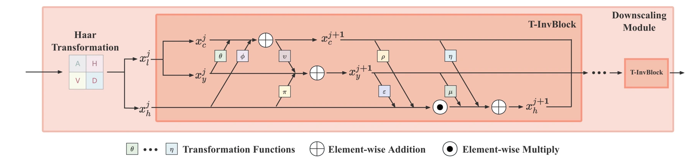
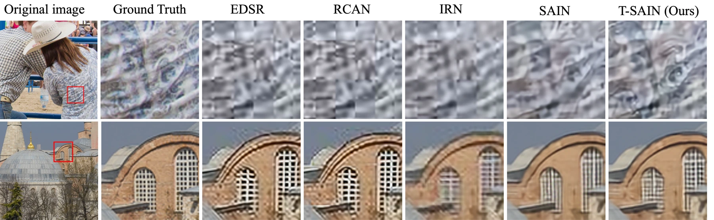

Image rescaling is not super-resolution with extra steps. Downscaling and upscaling are designed together, so the low-resolution image is not an arbitrary degraded input but a container the system itself filled — and what it chose to put there determines what can later be recovered.
图像缩放不是多了几步的超分辨率。下采样与上采样是被联合设计的，因此低分辨率图像不是一个任意的退化输入，而是系统自己填充好的一个容器——它当初选择往里放什么，决定了之后能恢复出什么。
Invertible networks make this explicit. One network handles both directions: a forward map that must be invertible by construction, plus a learned distribution for whatever is discarded. The usual design splits the representation into a low-frequency branch and a high-frequency branch, models the high-frequency part as noise, and processes the low-frequency part directly in RGB.
可逆网络把这件事说得明白：一个网络同时处理两个方向，一个构造上可逆的前向映射，加上一个为被丢弃部分学习的分布。常见设计把表示拆成低频与高频两支，把高频当作噪声建模，而低频直接在 RGB 域处理。
T-InvBlocks changes what the surviving branch holds. It separates luminance from chrominance so the invertible map stops spending capacity on the correlation between R, G and B, and it forces the high-frequency input to zero at reconstruction time. Inserted into existing pipelines it gains 0.4–0.6 dB at 2× under JPEG compression at comparable parameter counts.
T-InvBlocks 改变了留存分支所承载的内容。它把亮度与色度分开，使可逆映射不再把容量浪费在 R、G、B 三通道的相关性上，并在重建时把高频输入强制置零。嵌入既有流水线后，在 JPEG 压缩下、参数量相当的前提下取得 0.4–0.6 dB（2×）的提升。
Learned rescaling controls both sides of the compression: the low-resolution image is a designed representation, not an arbitrary degraded input, so where information is placed is part of the model.
学习式缩放同时控制压缩的两端：低分辨率图像是一个被设计的表示，而非任意的退化输入，因此信息放在哪儿本身就是模型的一部分。
The low-frequency branch is split into luminance (Y) and chrominance (CbCr) instead of RGB, removing channel redundancy, and reconstruction uses an all-zero high-frequency input so recovery information has to live in the small image.
低频分支被拆分为亮度（Y）与色度（CbCr）而非 RGB，以消除通道冗余；重建时高频输入置零，迫使恢复所需的信息必须留在小图里。
Plug-and-play: inserted into IRN-style rescaling and SAIN-style compression-aware pipelines, T-SAIN gains 0.4–0.6 dB at 2× and 0.2–0.5 dB at 4× over SAIN on JPEG-compressed DIV2K, at comparable parameter counts.
即插即用：嵌入 IRN 式缩放与 SAIN 式压缩感知流水线后，T-SAIN 在 JPEG 压缩的 DIV2K 上相对 SAIN 提升 0.4–0.6 dB（2×）与 0.2–0.5 dB（4×），参数量相当。
Three branches, three jobs三条分支，三种职责
A vanilla invertible block splits its input in two and couples the halves with affine transforms that are invertible by construction. One half becomes the low-frequency representation that survives as the small image; the other is the high-frequency detail that must be stored or sampled at reconstruction time.
普通的可逆块把输入一分为二，再用构造上可逆的仿射变换耦合两半。一半成为留存下来的低频表示，也就是那张小图；另一半是高频细节，必须在重建时被存储或被采样出来。
The tri-branch version is not a third prediction of the same image. It divides the surviving half into luminance and chrominance and keeps the high-frequency branch as a third path, so each branch has a distinct role in the mapping rather than three copies of one job.
三分支版本并不是对同一张图做第三次预测。它把留存的那一半再拆成亮度与色度，并把高频分支保留为第三条通路——于是每条分支在映射中承担不同职责，而不是同一件事的三份副本。
The all-zero high-frequency mapping is the sharpest choice. At upscaling time the detail branch is fed zeros instead of a sampled code, which removes the option of leaning on generated detail and pressures the learned downscaler to keep whatever will actually be needed inside the small image.
高频置零映射是最锋利的设计选择。上采样时，细节分支被喂入零而不是采样出的编码，这就取消了依赖生成细节这条退路，反过来逼迫学到的下采样器把真正需要的信息留在小图里。


Why RGB is the wrong space for the surviving half为什么 RGB 不是留存半分支该用的空间
The redundancy argument is concrete. In a natural image the three RGB channels are strongly correlated — much of what the R channel says is predictable from G and B — so a block processing them jointly spends capacity transmitting essentially the same luminance structure three times.
冗余的论证是具体的。自然图像的三个 RGB 通道高度相关——R 通道所表达的内容很大一部分可由 G 与 B 预测——因此一个联合处理三通道的块，等于把同一套亮度结构重复传输了三次，白白消耗容量。
Splitting into Y and CbCr concentrates most of the perceptually relevant information in one channel and leaves two low-bandwidth chrominance channels. The invertible coupling then operates on a representation whose channels mean different things instead of on three near-copies.
拆成 Y 与 CbCr 之后，大部分感知相关信息集中到一个通道，另留两个低带宽的色度通道。可逆耦合于是作用于一个各通道含义不同的表示，而不是作用于三份近似拷贝。
This is why the gain comes from redesigning what is stored rather than from adding depth. The block reportedly drops into existing architectures at comparable parameter counts, which is the signature of a representation change and not of a capacity increase.
正因如此，收益来自重新设计所存内容，而不是来自加深网络。该块据称能以相当的参数量嵌入既有架构，这正是“换了表示”而非“加了容量”的特征。
What changes when the branches change分支改变后发生了什么
The evaluation inserts the block into two different families — IRN-style rescaling and SAIN-style compression-aware pipelines — and tests ordinary reconstruction alongside JPEG-compressed reconstruction across several quality factors and 2×/4× scaling.
评测把该块嵌入两个不同的体系——IRN 式缩放与 SAIN 式压缩感知流水线——并在多个质量因子、2×/4× 缩放下，分别测试普通重建与经过 JPEG 压缩后的重建。
Testing across two hosts is the load-bearing part. A gain that appears in only one complete network could come from an interaction with that network; the same block improving two architectures points at the representation rather than at the host.
在两个宿主上测试是承重设计。只在一个完整网络中出现的增益，可能来自与该网络的某种相互作用；同一个块能同时改善两种架构，则指向表示本身而非宿主。
The JPEG setting is the honest test of the idea. Lossy encoding will discard part of the small image regardless, so the real question is whether information was placed where the codec is likely to keep it. Gains of 0.4–0.6 dB at 2× and 0.2–0.5 dB at 4× suggest it was.
JPEG 场景才是对这个思路的诚实检验。有损编码无论如何都会丢掉小图的一部分，因此真正的问题是：信息是否被放在了编码器倾向于保留的位置上。2× 下 0.4–0.6 dB、4× 下 0.2–0.5 dB 的提升说明它是。


Rescaling as information allocation把缩放看作信息分配
The framing that generalises is allocation. Because encoder and decoder are trained together, the system decides what the small image carries; once that is a design variable, luminance/chrominance separation and zero-detail reconstruction are both ways of spending the budget better.
可推广的框架是分配。由于编码器与解码器是联合训练的，系统可以决定小图承载什么；一旦这成为设计变量，亮度／色度分离与零细节重建就都成了把预算花得更好的两种方式。
The scope is narrower than super-resolution. This assumes a coordinated encode/decode pipeline where the downscaler is yours. Recovering an arbitrary image from the web is a different problem with none of this control, and the numbers should not be read as a claim about that setting.
其适用范围比超分辨率要窄。它假定存在一个协同的编解码流水线，且下采样器是你自己的。从网上恢复一张任意图像是完全不同的问题，没有任何这种控制权，这些数字不应被读作对该场景的论断。
One practical limit is worth naming. Forcing recovery information into the small image means that image carries structure a codec may treat as noise. Robustness under JPEG is evidence it works at the tested quality factors, not a guarantee across every compression pipeline a deployment might use.
还有一个值得点明的实践限制。把恢复信息压进小图，意味着那张图携带了编码器可能视作噪声的结构。在 JPEG 下的鲁棒性证明它在所测质量因子上有效，却不保证在部署可能用到的任何压缩流水线上都成立。
Paper & authors
Plug-and-Play Tri-Branch Invertible Block for Image Rescaling
AAAI 2025
Cite this work
@misc{bao2024plugandplaytribranchinvertibleblock,
title = {Plug-and-Play Tri-Branch Invertible Block for Image Rescaling},
author = {Jingwei Bao
and Jinhua Hao
and Pengcheng Xu
and Ming Sun
and Chao Zhou
and Shuyuan Zhu},
year = {2024},
eprint = {2412.13508},
archivePrefix = {arXiv},
primaryClass = {eess.IV},
url = {https://arxiv.org/abs/2412.13508}
}